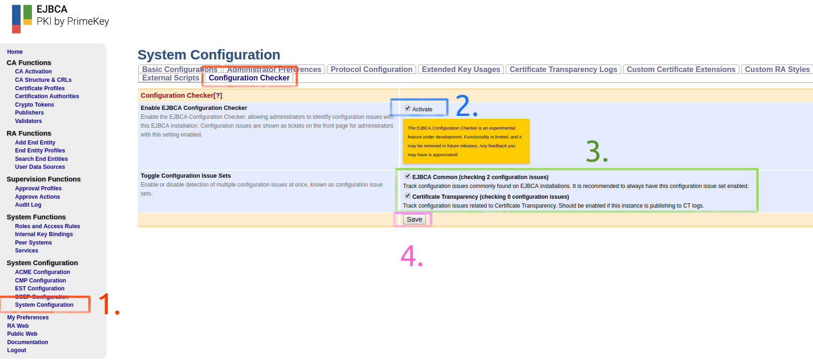
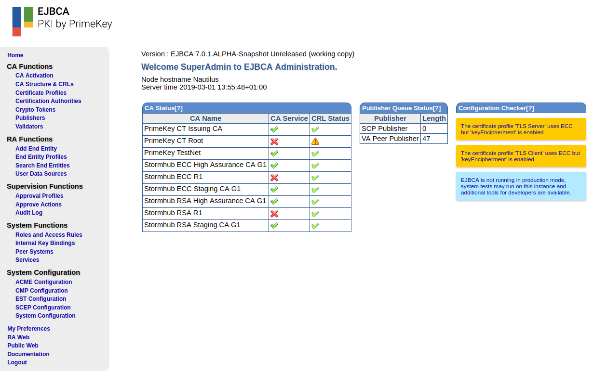

EJBCA Configuration Checker
The EJBCA Configuration Checker is an experimental feature under development. Functionality is limited, and it may be removed in future releases. Any feedback you may have is appreciated!
The EJBCA Configuration Checker, introduced in EJBCA 7.0.1, is an issue tracking system (ITS) able to detect and notify about configuration issues with the local EJBCA instance, such as a misconfiguration in a certificate profile, an enabled protocol not being in use, or a certificate in an internal key binding about to expire.
Note that the configuration checker highlights potential mistakes needed to be manually resolved by an administrator. The configuration checker is not a replacement for good policies and skilled personnel and you should not rely on the configuration checker to pass an audit. The configuration checker does not warn about every possible configuration issue in an installation, only about the specific topics it has been configured to check.
Overview
The EJBCA Configuration Checker consists of configuration issues, tickets, and configuration issue sets.
Configuration Issue
A configuration issue is a type of problem checked by the EJBCA Configuration Checker. If a configuration issue is present on the system it produces a set of tickets.
For information on available types of configuration issues, see Configuration Issues.
Ticket
A ticket is the realization of a configuration issue. Tickets are shown on the front page in the CA web. Each ticket has a priority, and tickets with a higher priority take precedence over tickets with a lower priority if there are multiple issues detected at the same time.
|
Priority |
Description |
|
INFO |
Informative configuration issues, not necessarily requiring any action by an administrator. These configuration issues do not necessarily have to be resolved |
|
WARN |
Important configuration issues, requiring attention from an administrator. These configuration issues should be resolved as soon as possible. |
|
ERROR |
Configuration issues of great importance, requiring immediate attention from an administrator. These configuration issues should be resolved immediately. |
Each ticket is rendered with a description, a link to the documentation, and with a color based on its priority.
Configuration Issue Set
A configuration issue set is a group of configuration issues belonging together. Only configuration issues residing in one of the enabled configuration issue sets will be tracked. The following configuration issue sets are available:
EJBCA Common Tracks configuration issues commonly found on EJBCA installations. It is recommended to always have this configuration issue set enabled.
Certificate Transparency Tracks configuration issues related to Certificate Transparency. Should be enabled if the EJBCA instance is publishing to CT logs.
Configuration Issue Sets are enabled in the System Configuration, see Enable the Configuration Checker below.
Enable the Configuration Checker
The issue checker is disabled by default. To enable it, do the following:
In the CA web, click System Configuration and select the Configuration Checker tab.
Select to Activate the Enable EJBCA Configuration Checker.
Select one or more configuration issue sets:
Click Save to save the configuration.
Tickets now display in a Configuration Checker column on the front page.

Hide Configuration Checker
To hide the Configuration Checker column from being displayed on the front page, do the following:
Click the My Preferences menu option.
On the Administrator Preferences page, clear Show for the Issue Checker on Front Page option, and click Save.
View Ticket Information
If the documentation is available, you can view more information about a ticket by clicking on it. This opens a new tab or browser window, displaying information about why the ticket was created, and what you can do to resolve the configuration issue.